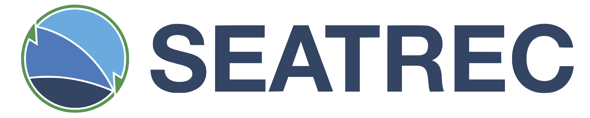
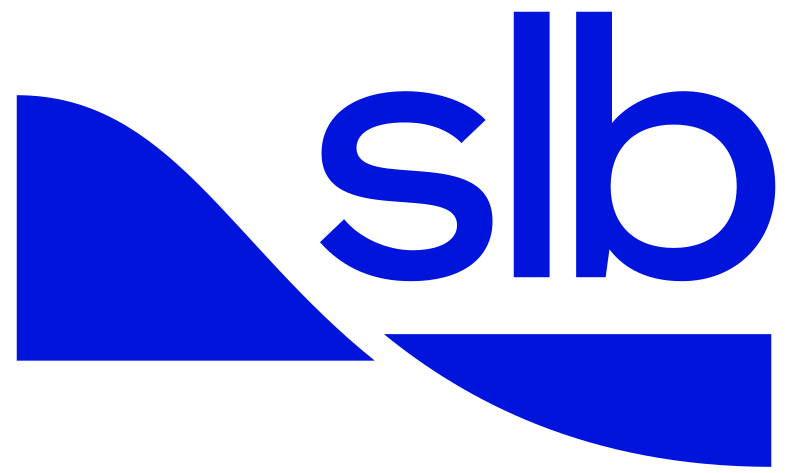

Work Experience
OPEX Corporation: Member Technical Staff; Warehouse Automation (May 2021 - Now)
At OPEX Corporation, I have worked on applying myriad technical skills to implement innovative software solutions that drive efficiency and accuracy in complex technical environments. In a recent project, I led the design of a high-precision barcode placement system, creating a custom Python-based GUI using Tkinter. This application provided real-time barcode positioning feedback during assembly, driving quality control from 5% to 100% while cutting installation time by 80%.
To maximize efficiency in data entry work, I developed various tools to streamline common tasks. These tools helped to reduce completion times by up to 90%. In other projects, I created various point cloud data parsing tools with NumPy and Pandas, making advanced data analysis accessible to non-technical users through intuitive interfaces. In other projects, I analyzed performance of various 3D scanning technologies, going so far as to develop a custom Python program to test the limits of the Intel RealSense camera.
Coca-Cola: Fluidics Engineer (February 2021 - May 2021)
At Coca Cola, worked on the Freestyle team, focused on making data-driven improvements to the efficiency and quality of the system. While testing fluidics components, I developed Python-based programs to extract and compare critical metrics from CSV data, enabling precise validation and resolution of conflicting hypotheses through quantified results. This analytical approach provided clear, data-backed insights that informed product development decisions.
Additionally, I modeled pumping mechanism behavior using Python (NumPy, SciPy) and MATLAB, simulating flow dynamics to optimize performance parameters. These models helped improve flow consistency and accuracy, ensuring the components operated at peak efficiency under varied conditions.
Seatrec: Project Engineer (September 2020 - February 2021)

At Seatrec, I developed a Python-based tool leveraging NumPy and Pandas to analyze historical oceanic thermocline data. This tool generated a global energy potential heatmap, showcasing the capabilities of Seatrec’s technologies and serving as a valuable resource for sales and marketing efforts.
Additionally, I contributed to a grant proposal aimed at securing funding for Seatrec’s technology development. While the proposal was not ultimately successful, the experience enhanced my skills in technical writing, collaborative problem-solving, and presenting data-driven insights to support innovative energy solutions.
SLB (Schlumberger): Manufacturing Engineer (July 2018 - July 2020)

With SLB (Schlumberger) , I worked within the Shaped Charge Manufacturing Facility , a high-volume, automated manufacturing facility. Within this manufacturing group, I led projects focused on improving reliability, minimizing costs, and increasing yield. Leveraging DMAIC root cause analysis, I developed and implemented a Python-based dosing algorithm that, when implemented alongside mechanical improvements, boosted overall plant throughput by over 2%.
To help complement manual counting operations, I designed an item-tracking system to enhance traceability and validate operator counts, improving process accuracy and accountability. These efforts showcase my ability to combine data analysis, process optimization, and innovative technologies to achieve measurable improvements in manufacturing efficiency. My work at SLB also helped drive my appreciation for inter-disciplinary engineering projects and respect for the outsized impact such projects can have on meeting broad company goals.